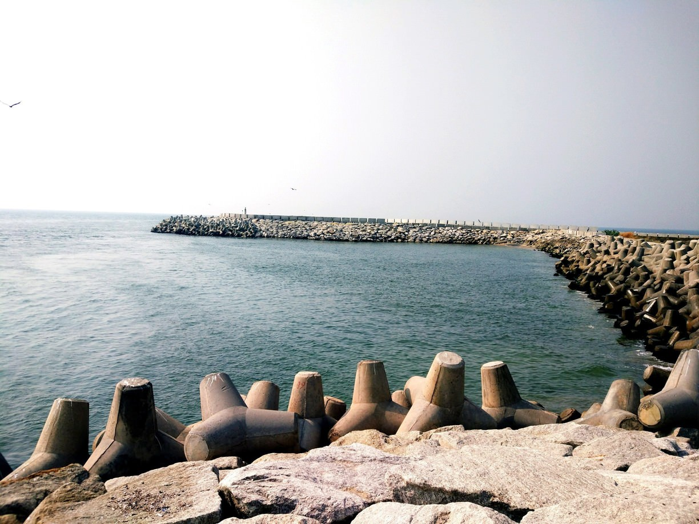
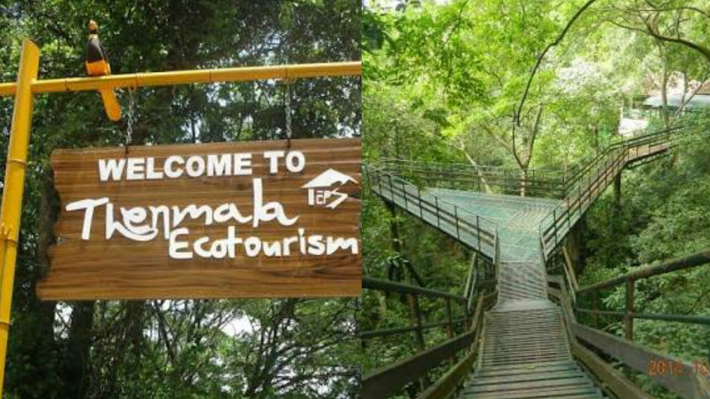
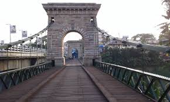

Places To Visit In Kollam
Jatayu Earths Center

Timing:10:00 AM - 9:00 PM.. Jatayu Earths Center Incorporates all aspects of tourism, offering a complete God’s own Country experience to each one of you. Spread across 65 acres of land, Jatayu Earth's Center has elegant and mesmerizing elements .
Neendakara Port
Neendakara harbour is the largest fishing harbour in the state.From Neendakara Bridge, one gets a beautiful vantage point to view the confluence of the Ashtamudi Lake and the sea.
Thenmala
Thenmala is a tourist destination in the eastern side of Kollam district in Kerala, India. The place is world-famous because of the presence of the first eco-tourism centre in India.Chenduruney wild life sanctuary provides trekking experience. .
Punalur Bridge
The Punalur Suspension Bridge, located in Punalur is the oldest motorable Bridge in Kerala, which was built by Travancore Government and is now a historical attraction. The bridge has a length of 400 feet. .